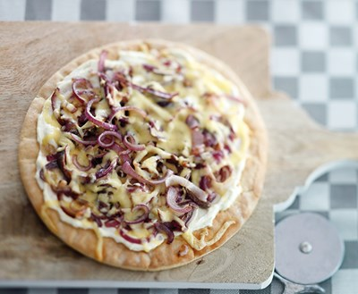
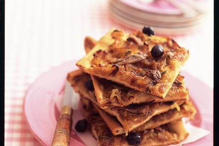

Ingredienten
- 4 eetlepels olijfolie
- 1 kilo uien (in halve ringen)
- 1 pak bladerdeeg voor hartige taart ((diepvries, 450 g), ontdooid)
- 2 eetlepels suiker
- 1 eetlepel tijm
- 1 blikje ansjovisfilets ((46 g), uitgelekt)
- 100 g zwarte olijven zonder pit
Bereidingsweize
1. Verhit de helft van de olijfolie in een koekenpan en fruit de uien afgedekt op matig vuur in 20-25 minuten tot ze zacht, maar niet bruin zijn.

2. Schep af en toe om. Verwarm intussen de oven voor op 200 °C. Leg de deegplakjes op de met bakpapier beklede bakplaat en druk de naden goed dicht.
3. Vorm een opstaand randje door de randen twee keer terug te vouwen. Bestrijk de rand met de rest van de olijfolie. Strooi de suiker over de uien, laat smelten en lichtbruin kleuren.
4. Strooi er tijm en zout en peper naar smaak over. Schep de uien uit de pan en verdeel ze over de deegbodem.
5. Leg de ansjovisfilets in een ruitpatroon op de uien en daarbovenop de olijven. Bak de pizza in de oven in 25-30 minuten
goudbruin en gaar.